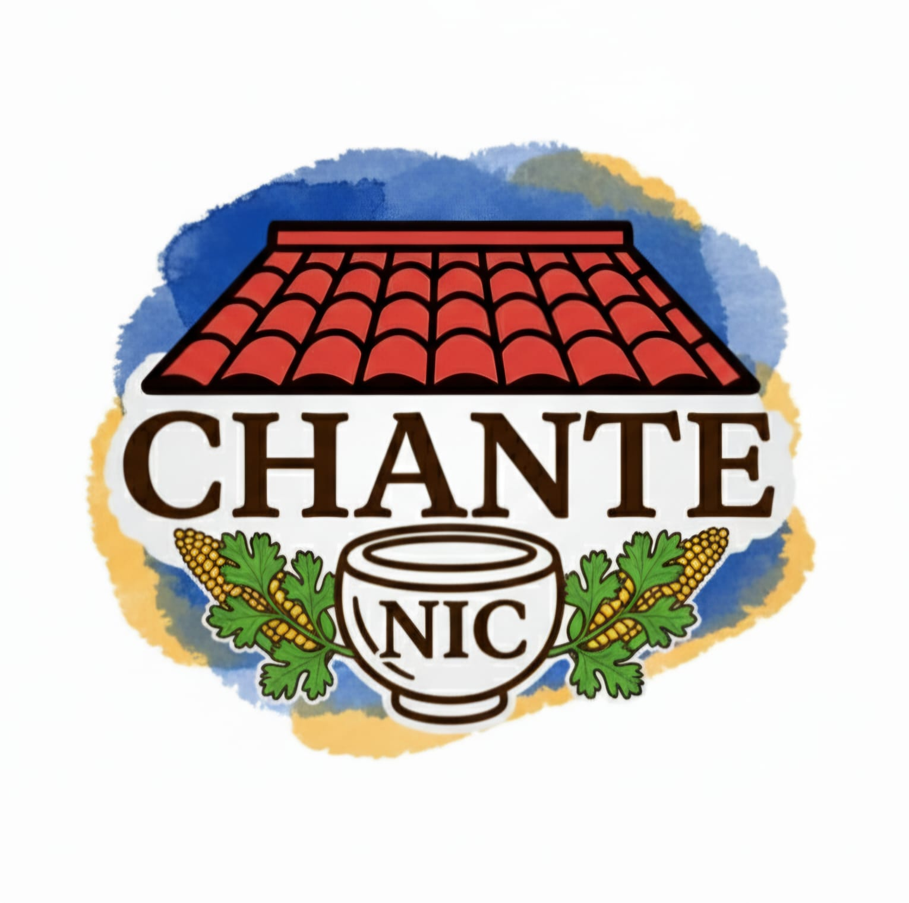

Nuestra Historia
Todo comenzó con una amistad y un sueño. Dos estudiantes de la carrera de Ingeniería en Sistemas, Reilly Bonilla y Marcela Granera, ambas de 19 años, compartían no solo el amor por la tecnología, sino también por la gastronomía nicaragüense.
Entre clases, códigos y proyectos, surgió la idea de crear un espacio digital que reflejara el auténtico sabor de Nicaragua. Así nació nuestro proyecto: una página que celebra la tradición, los colores, los aromas y el orgullo de nuestras raíces.
Con esfuerzo y creatividad, fuimos dando forma a este rincón virtual donde cada platillo cuenta una historia, y cada visitante se convierte en parte de nuestra cultura.
Nuestro Logo
Significado del Logo
Nuestro logo representa la esencia de Chante Nic.
El techo de tejas rojas simboliza el calor del hogar y las casas tradicionales de nuestro país. En el centro, la taza de barro refleja la conexión con nuestras raíces, recordando los utensilios que por generaciones han acompañado nuestras mesas y nuestras bebidas más queridas. Los detalles de mazorcas y hojas verdes evocan los ingredientes frescos que utilizamos, mientras que los colores transmiten tradición, identidad y orgullo nicaragüense. Cada elemento del logo representa nuestro compromiso por mantener vivo el sabor auténtico de Nicaragua.